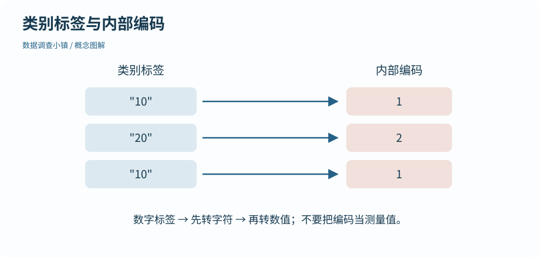

第 09 节 · 对象仓库
类别也需要顺序
为什么 afternoon 会排在 morning 前面？
理解因子与水平；避免把类别内部编码当数值。
本节目录
运行位置：打开练习包内的 r-lab.Rproj，在项目根目录运行本节脚本。安装与准备见第 02—04 节；第 13 节说明扩展包。
字母顺序不一定是业务顺序
公园记录分 morning 和 afternoon。按字符排序，afternoon 通常在 morning 前面；但我们讲一天的经过，希望从早到晚。因子把类别及其允许的水平放在同一个对象里，可以明确规定展示顺序。
图解 · 类别标签与内部编码

10、20 是示例标签，1、2 是因子内部编码。先转回文字再转数字，才能恢复这些数值标签。
放大查看 ↗ 保存 SVG ↓# 数据调查小镇 · 第 09 节
# 在 r-lab 项目根目录运行；输出只写入 results。
period <- factor(c("afternoon", "morning", "morning"), levels = c("morning", "afternoon"))
print(period)
print(table(period))
print(levels(period))
labels <- factor(c("10", "20", "10"))
print(as.integer(labels))
print(as.numeric(as.character(labels)))[1] afternoon morning morning
Levels: morning afternoon
period
morning afternoon
2 1
[1] "morning" "afternoon"
[1] 1 2 1
[1] 10 20 10levels = c("morning", "afternoon") 说明有哪些类别以及顺序。table(period) 统计各类别的次数。用英文值只是为了脚本跨环境更容易复现；字段手册中注明 morning 是上午、afternoon 是下午。
类别顺序与数值距离不同
把上午放在下午前面，不意味着两个类别之间“相差一个单位”。类似地，低、中、高可以有等级，但等级之间的距离未必相等。ordered = TRUE 会建立有序因子，它可能影响后面的模型处理，因此不要只为换图例顺序就随意添加。
本节只需要普通因子的水平顺序。第 21 节会用它让图例按早晚排列；不用等到统计建模才认识类别。
看上去像数字，也可能是标签
例子中的 factor(c("10", "20", "10")) 保存的是两个类别。直接用 as.integer() 看到的是内部编码 1、2、1，不能把它解释为 10、20、10。如果这些标签确实代表测量数值，需要先转回字符，再转换为数字，并检查结果。
因子内部编码用于区分类别，不是这个类别的测量值。这一点在旧代码、导入设置或模型结果中很常见，值得真正跑一次看输出。
新类别为何变成 NA
如果你只允许上午和下午，却输入 evening，转换时可能变成 NA。它提醒你数据出现了不在已知类别中的值。先决定是拼写问题还是确实新增了时段，再更新规则；不要把它默默当成下午。
类别来自记录设计，R 不会替你定义它们。完整的数据字典需要说明允许值、含义和缺失标记。
动手试试
新增时段
记录现在增加 evening。怎样显式保留上午、下午、傍晚的顺序？
给我一点提示
把新类别加入 levels，并先检查原始字符串。
查看参考解法与解释
factor(values, levels = c("morning", "afternoon", "evening"))。先确认 values 中没有多余空格或拼写变体，否则仍可能产生 NA。
带走这一点
下一节继续沿地图向前。也可以先修改本节例子中的一个值，解释输出为什么变化。
检查一下理解
对字符标签为 10、20 的因子直接转整数，通常得到什么？
查看解释
因子存储类别编码及标签；转整数暴露的是编码。